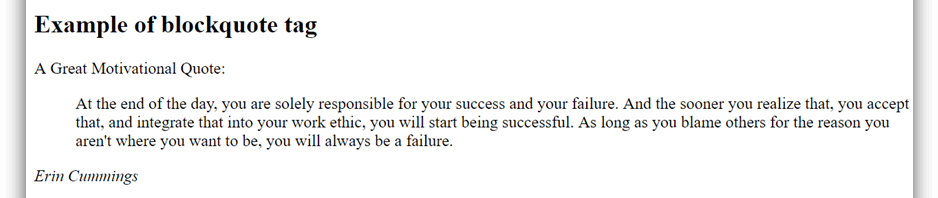
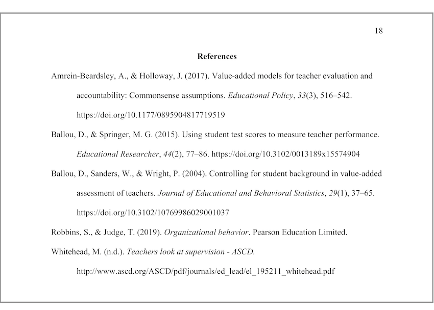

|
Citing
|
General Format: (Author’s Last Name(s) or Organization, Year)
When using a direct quote, introduce the quote with an in-text citation in parenthesis. For example:
If you are quoting more than 40 words, use a blockquote. Indent the quoted text. Quotation marks are not required. For example:
Blockquotes are used when the quoted text is long (e.g. paragraphs). (Image taken from Java Point)
In summarizations and paraphrases, include the last name of the author(s) and the year the source was published. For...
All sources and references used must be cited at a bibliography or references section at the end of the text. Here are the APA citation formats for a number of online sources:
Author(s) (Year, Month Date). Title of the article. Title of the newspaper of publication. URL.
Author(s) (Year, Month Date). Title of page or section. Source. URL.
Author(s) (Year, Month Date). Title of the report or document. Source. URL.
Author (Year, Month Date). Title of the dissertation/thesis [Doctoral dissertation/Masteral thesis, Name of university]. Database/Repository. URL.
Here is an example of a bibliography in APA format:
(Image taken from Scribbr)